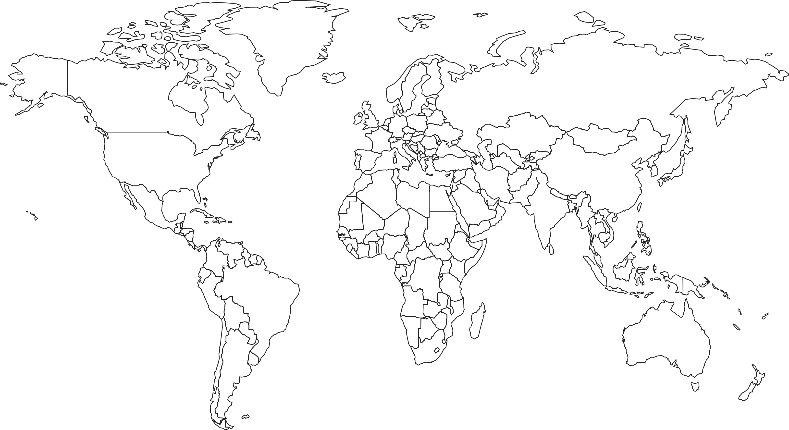
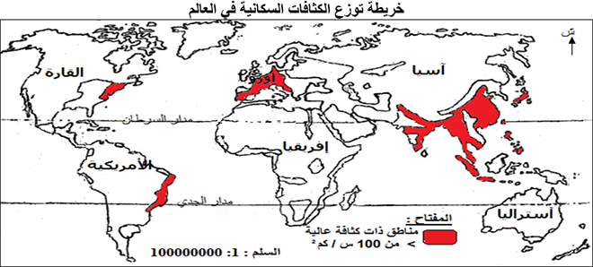

تمارين – التوزع الجغرافي للسكان
- الكثافة السكانية:
- عدد السكان في الكيلومتر المربع الواحد، وتُعد مؤشراً أساسياً لقياس التوزع الجغرافي للسكان، وتُستعمل للمقارنة بين المناطق والدول.
- الخلاء السكاني:
- مناطق ذات عدد محدود من السكان، تقل فيها الكثافات السكانية عموماً عن 10 ساكن/كلم². وتُعزى قلّة سكانها إلى قساوة الظروف الطبيعية (مناخ غير ملائم، تضاريس معرقلة، غابات كثيفة)، لا إلى انعدام الموارد بالضرورة.
- نظام الأرزّية:
- نظام زراعي بجنوب وشرقي آسيا يعتمد على زراعة كثيفة مشغّلة ذات محصول غذائي رئيسي يتمثل في الأرز، ويتطلب عدداً كبيراً من السكان لتشييد السدود ومد قنوات الري واستصلاح الأراضي، مما ساهم في تكوين كثافات سكانية مرتفعة جداً في دلتات الأنهار.
- مناطق الإعمار الكبرى:
- المناطق الأكثر كثافة سكانية في العالم، ويقع معظمها في النصف الشمالي من الكرة الأرضية خاصة على طول السواحل والأنهار. وتُقسّم إلى مناطق تركز رئيسية (جنوب آسيا، شرق آسيا، أوروبا، جنوب شرق آسيا) ومناطق تركز ثانوية (خليج غينيا، شمال شرق أمريكا الشمالية، جنوب شرق البرازيل).
| المنطقة | الكثافة السكانية (ساكن/كلم²) |
|---|---|
| الجنوب الشرقي البرازيلي | 100 |
| الوسط الغربي البرازيلي | 6 |
| شمال البرازيل | 3 |
المصدر: معطيات الدرس حول التوزع الجغرافي للسكان بالبرازيل


تتركز مناطق الإعمار الكبرى في النصف الشمالي من الكرة الأرضية خاصة على طول السواحل والأنهار. وأهم مناطق التركز الرئيسية: جنوب آسيا (2 مليار نسمة، من بينها الهند 1.390 مليار)، وشرق آسيا (1.650 مليار نسمة، من بينها الصين 1.4 مليار)، وأوروبا (700 مليون نسمة)، وجنوب شرقي آسيا (671 مليون نسمة). أما مناطق التركز الثانوية فتشمل خليج غينيا (323 مليون)، والشمال الشرقي لأمريكا الشمالية (220 مليون)، وجنوب شرق البرازيل. في المقابل، تقع مناطق الخلاء السكاني في الصحاري (الصحراء الأفريقية الكبرى، صحراء أستراليا، صحراء شبه الجزيرة العربية، الصحاري الأمريكية)، والغابات الاستوائية الكثيفة (أمازونيا وأفريقيا)، والمرتفعات الجبلية (الهيمالايا بآسيا)، والمناطق القطبية الباردة (سيبيريا وغرينلاند). وتتميز هذه المناطق بكثافات تقل عن 10 ساكن/كلم²، مثل 0.03 س/كلم² في غرينلاند و3 س/كلم² في أستراليا.
- مقدمة: تحديد التفاوت السكاني كخاصية بنيوية للمجال العالمي.
- تطوير: أولاً. التفاوت في البرازيل؛ ثانياً. التفاوت في العالم؛ ثالثاً. العوامل المشتركة المفسرة.
- خاتمة: التفاوت خاصية بنيوية للمجال العالمي.
مقدمة
يتوزع سكان العالم، الذي بلغ حوالي 8 مليارات نسمة سنة 2022، بصفة غير متوازنة بين القارات والدول والجهات، إذ تتركز الكثافات السكانية الكبرى في مساحات محدودة بينما تمتد مساحات شاسعة شبه خالية من السكان. ويظهر هذا التفاوت بوضوح في حالة البرازيل كما يظهر في المجال العالمي.
تطوير
أولاً. التفاوت في البرازيل
يتوزع سكان البرازيل، البالغ عددهم 215 مليون نسمة سنة 2022، بصفة متفاوتة: إذ تستوعب منطقة الجنوب الشرقي، وخاصة المدن الكبرى كساو باولو وريو دي جانيرو، أعلى الكثافات (تفوق 100 ساكن/كلم²)، وتمثل مع الشمال الشرقي 36% من المساحة و83% من مجموع السكان. في المقابل، يقل عدد سكان الشمال (3 س/كلم²) والوسط الغربي (6 س/كلم²)، وتمثل هاتان المنطقتان 64% من المساحة ولا تضمان سوى 17% من السكان، ويُعد إقليم الأمازون من أكبر مناطق الخلاء السكاني في العالم.
ثانياً. التفاوت في العالم
يتوزع سكان العالم بصفة متفاوتة أيضاً: فتتركز مناطق الإعمار الكبرى في النصف الشمالي من الكرة الأرضية على طول السواحل والأنهار، وأهمها جنوب آسيا (2 مليار نسمة) وشرق آسيا (1.650 مليار نسمة) وأوروبا (700 مليون) وجنوب شرقي آسيا (671 مليون). في المقابل، تقع مناطق الخلاء السكاني في الصحاري (الصحراء الأفريقية الكبرى، صحراء أستراليا) والغابات الاستوائية الكثيفة (أمازونيا وأفريقيا) والمرتفعات الجبلية (الهيمالايا) والمناطق القطبية الباردة (سيبيريا وغرينلاند)، حيث تقل الكثافات عن 10 ساكن/كلم².
ثالثاً. العوامل المشتركة المفسرة
يخضع هذا التفاوت في الحالتين لعوامل متداخلة: فعوامل التركز السكاني تشمل العوامل الطبيعية (السهول الخصبة، وفرة الموارد المائية، المناخات الملائمة، الموقع المنفتح على الواجهات البحرية) والعوامل التاريخية (قدم ظاهرة التعمير) والعوامل الاقتصادية (نظام الأرزّية بآسيا، تنامي الأنشطة الصناعية بأوروبا، تمركز الأنشطة الاقتصادية بالسواحل البرازيلية). أما مناطق الخلاء السكاني فتُفسر بقساوة الظروف الطبيعية (مناخ غير ملائم، فقر التربة، تضاريس معرقلة، غابات كثيفة) وبضعف البنية التحتية وبُعد هذه المناطق عن المراكز الحضرية والأسواق.
خاتمة
هكذا يُعد التفاوت في التوزع الجغرافي للسكان خاصية بنيوية للمجال العالمي، تتجلى في حالة البرازيل كما تتجلى في المجال العالمي، وتُفسَّر بعوامل طبيعية وتاريخية واقتصادية متداخلة.